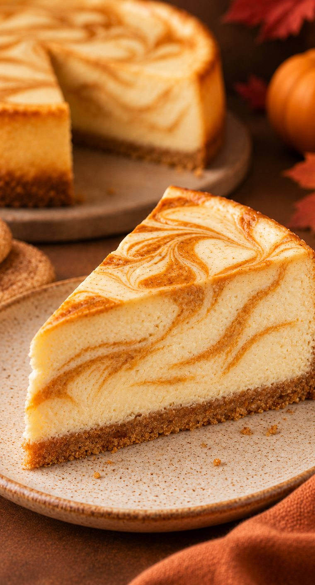

Marianna’s Pumpkin Swirl Cheesecake
Snickerdoodle Crust · Cheesecake Factory–Style

A rich, creamy vanilla cheesecake with delicate ribbons of pumpkin spice, baked on a buttery snickerdoodle cookie crust. Pumpkin is intentionally subtle, allowing the classic cheesecake flavor to remain the star.
Preparation: approximately 30 minutes. Baking: 1 hour 15 minutes–1 hour 30 minutes, plus 8–10 minutes for the crust and 1 hour of oven-off cooling. Chilling: ideally 24 hours.
Ingredients
Snickerdoodle cookie crust
- 225 g crisp snickerdoodle cookies, finely crushed (approximately 2 cups)
- 55 g unsalted butter, melted (4 Tbsp)
- Pinch of salt
Classic cheesecake filling
- 680 g full-fat Philadelphia Original cream cheese, room temperature (3 packages, 8 oz each)
- 267 g granulated sugar (1⅓ cups)
- 5 large eggs, room temperature
- 454 g full-fat sour cream, room temperature
- 30 g all-purpose flour (¼ cup)
- 2 tsp vanilla bean paste
- 2 tsp fresh lemon juice
- Finely grated zest of ½ lemon
Subtle pumpkin swirl
- 120 g pure pumpkin purée (½ cup), not pumpkin pie filling
- 1 Tbsp granulated sugar
- ½ tsp ground cinnamon
- ¼ tsp ground ginger
- Pinch of ground nutmeg
- 1½–2 cups reserved cheesecake batter
Directions
- Preheat the oven to 325°F with a rack in the center. Butter a 9-inch springform pan.
- Finely crush the snickerdoodle cookies into uniform crumbs. Combine the crumbs, melted butter and salt until the mixture resembles damp sand and holds together when squeezed. Press firmly into the bottom and approximately 1 inch up the sides of the pan.
- Bake the crust for 8–10 minutes. Remove and allow to cool while preparing the filling.
- Ensure all filling ingredients are at room temperature. Beat the cream cheese on low speed until smooth and creamy, scraping the bowl and paddle as needed. Gradually add the sugar and mix until completely smooth.
- Add the eggs one at a time, mixing just until each is incorporated. Mix in the flour, vanilla bean paste, lemon juice and lemon zest. Add the sour cream last and mix on low speed just until uniform. Reserve approximately 1½–2 cups of plain cheesecake batter in a separate bowl.
- In a small bowl, combine the pumpkin purée, sugar, cinnamon, ginger and nutmeg. Stir until smooth. Gently fold the reserved cheesecake batter into the pumpkin mixture until completely incorporated. The mixture should be creamy and similar in consistency to the original batter.
- Pour the remaining plain cheesecake batter into the cooled crust. Drop spoonfuls of pumpkin mixture irregularly across the surface. Using a thin knife or skewer, gently swirl through the plain batter with approximately 5–8 sweeping motions. Avoid overmixing so the pumpkin remains visible as distinct ribbons.
- Wrap the outside of the springform pan in two or three overlapping layers of wide heavy-duty aluminum foil, extending above the intended water line. Set a kettle of water to heat. Place the wrapped springform pan in a larger roasting pan. Set on the center oven rack and carefully pour hot water into the roasting pan until it reaches approximately halfway up the springform pan, below the top of the foil.
- Bake at 325°F for approximately 1 hour 15 minutes to 1 hour 30 minutes. Begin checking at 75 minutes; if necessary, continue in 5–10-minute increments. The outer filling should be set and the central 2–3 inches should wobble gently as one unit. The center should not appear liquid.
- Turn off the oven, prop the door slightly open and leave the cheesecake in the water bath in the oven for 1 hour. Carefully remove the springform pan from the water bath, discard the foil and set it on a wire rack. Cool at room temperature until no longer warm; refrigerate within 2 hours of removing from the oven.
- Cover and refrigerate for at least 12 hours, ideally 24 hours, before releasing the springform ring and slicing. For clean slices, dip a knife in hot water and wipe it dry between cuts.
- Serve plain to showcase the pumpkin marbling and snickerdoodle crust, or add a small dollop of lightly sweetened whipped cream. A very light dusting of cinnamon makes an attractive finish.
Recipe notes
- Use crisp snickerdoodle cookies rather than soft, chewy bakery cookies for the best crust texture.
- Start with 55 g melted butter; add a little more only if the crumbs will not hold together when pressed.
- Use pure pumpkin purée, not prepared pumpkin pie filling.
- Keep the pumpkin swirl concentrated in a relatively small portion of the batter. The goal is subtle pumpkin flavor, not a pumpkin cheesecake.
- Keep the mixer on low throughout to minimize excess air and reduce the likelihood of cracking.
- The full 24-hour chill allows the texture and flavors to develop.
- The intended result is a classic, dense and creamy vanilla cheesecake with delicate pumpkin-spice ribbons and a buttery cinnamon-sugar snickerdoodle crust.